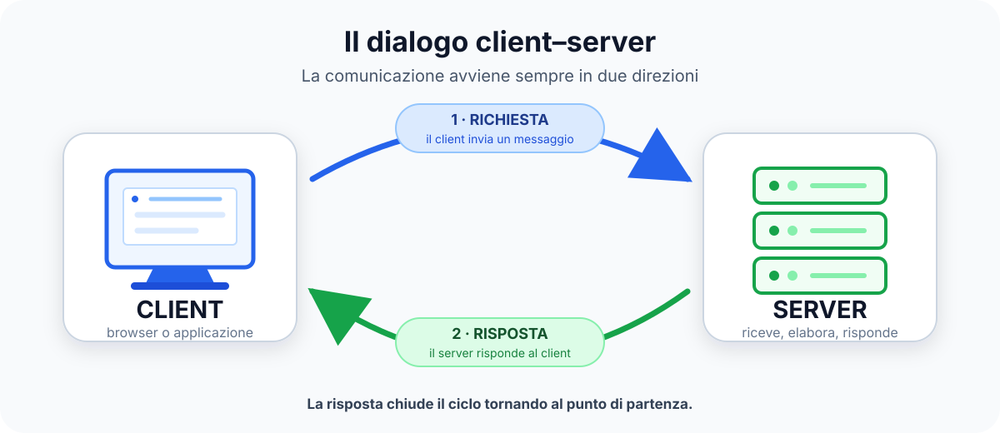

Reti, protocolli e socket
Capiremo come client e server si trovano, stabiliscono le regole dello scambio e inviano messaggi. Con Python costruiremo i primi servizi di rete.
Lezione 0 · TPSIT · Classe quinta
Partiremo dallo scambio di messaggi tra client e server e arriveremo a un servizio completo, accessibile dal browser e installabile come PWA.
La domanda guida
Che cosa deve accadere quando più persone usano lo stesso servizio? Pensate a una chat, a un gioco online o a un sito di prenotazioni: molte richieste possono partire quasi nello stesso momento e ciascuno si aspetta la risposta giusta.
In TPSIT studieremo come le parti di un sistema comunicano e collaborano. Impareremo a riconoscere chi chiede un servizio, chi lo fornisce, quali informazioni vengono scambiate e quali regole permettono di capirsi. Il nostro punto di partenza sarà questo percorso essenziale:

Provate a seguire mentalmente questo viaggio in un servizio che conoscete. Chi usa l’applicazione è sempre il client? Dove potrebbe trovarsi il server? Che cosa contiene il messaggio? Le vostre ipotesi ci aiuteranno a costruire le prime definizioni.
Il traguardo
Realizzeremo un servizio completo: più client potranno comunicare con un server, richiedere dati o operazioni e ricevere una risposta utile. Una API farà da punto di incontro tra il servizio e il client Web.
L’applicazione sarà utilizzabile dal browser, si adatterà a schermi diversi e potrà essere installata come PWA. Non costruiremo tutto subito: ogni attività aggiungerà una parte verificabile e riutilizzabile. Alla fine dovremo anche saper spiegare come collaborano i componenti e come abbiamo controllato il loro funzionamento.
La direzione dell’anno
Non serve conoscere già tutti i termini. Per ora osservate la sequenza: partiremo dai meccanismi di rete e arriveremo a un’applicazione completa.
Capiremo come client e server si trovano, stabiliscono le regole dello scambio e inviano messaggi. Con Python costruiremo i primi servizi di rete.
Porteremo gli stessi concetti sul Web. Il server riceverà richieste HTTP e offrirà dati e operazioni attraverso una API.
Collegheremo un’interfaccia al servizio, gestiremo le risposte e integreremo il lavoro in una PWA documentata e verificata.
Le tappe non sono capitoli isolati. I messaggi progettati all’inizio verranno riutilizzati nelle API; il client finale userà il servizio costruito e migliorato durante l’anno.
Un ritmo comune
Costruiremo soluzioni, faremo comunicare i programmi, proveremo casi diversi e useremo il debugging per capire e correggere gli errori.
Ragioneremo su protocolli e architetture, leggeremo codice, confronteremo soluzioni e svolgeremo brevi verifiche per prepararci al laboratorio.
Il blocco da due ore e l’ora singola fanno parte dello stesso percorso. Un’idea progettata insieme diventerà codice in laboratorio; un errore incontrato nel codice diventerà un caso da analizzare. Lavoreremo per piccoli risultati, così ogni passo potrà essere provato, spiegato e migliorato.
Strumenti con uno scopo
Non è un elenco da imparare a memoria. Ogni strumento entrerà in gioco quando servirà a risolvere un problema concreto.
Con i socket costruiremo client e server essenziali e osserveremo direttamente il viaggio dei messaggi.
Ci permetterà di creare servizi Web e API, collegando richieste, risposte e dati strutturati.
Renderà il browser un vero client, capace di interrogare il servizio e aggiornare la pagina.
GitHub ospiterà lezioni ed esempi pubblici. Moodle raccoglierà consegne, verifiche, feedback e materiali riservati.
Prima sfida · Senza computer
Scegliete un servizio conosciuto, per esempio una chat, un gioco, una piattaforma video o un sistema di prenotazione. Provate a riconoscere chi è il client, chi è il server, quale messaggio potrebbe essere inviato e quale risposta dovrebbe arrivare.
Confrontatevi a coppie, concordate un esempio e proponetelo alla classe. Non serve conoscere già i termini tecnici: ci interessa seguire il viaggio della richiesta e capire quali parti devono collaborare.